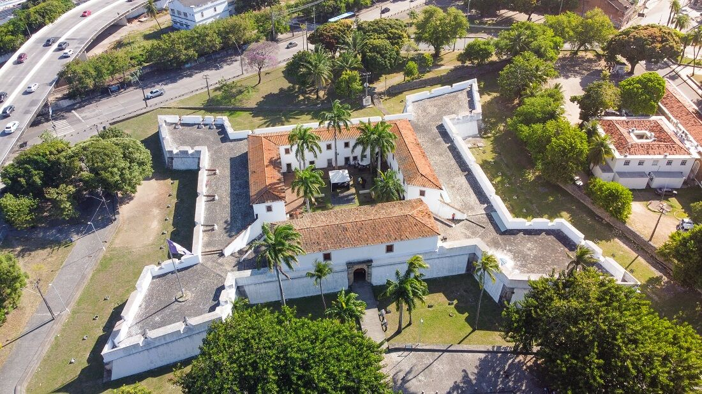
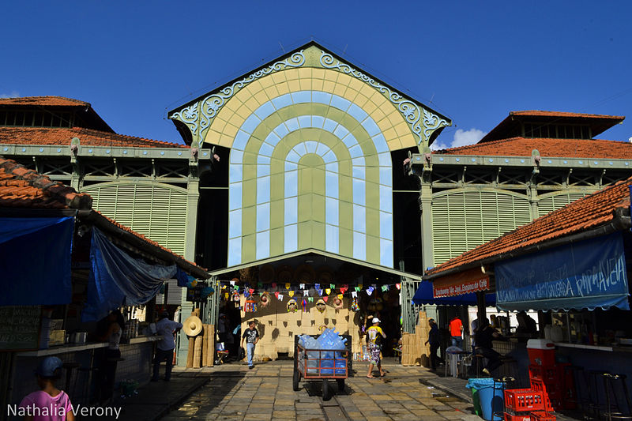
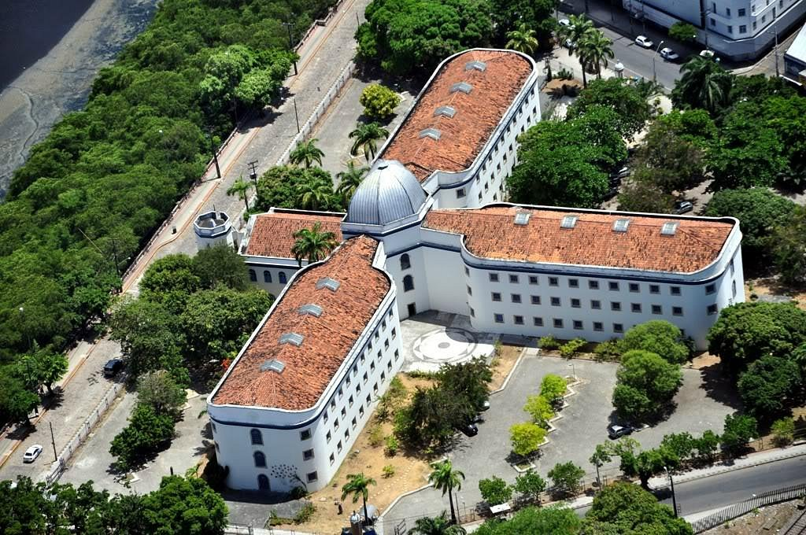

OUTROS PONTOS TURÍSTICOS DO RECIFE ANTIGO
Museu da Cidade do Recife
Foi instalado em 1982, Forte de São Tiago das Cinco Pontas, na zona sul da cidade, e faz parte da Secretaria de Cultura da Prefeitura do Recife. Desde a sua criação, o museu opera em uma construção portuguesa de pedra e cal construída por cima do forte holandês, feito de madeira e terra.
Mercado de São José
O Mercado de São José é um mercado público do Recife, capital de Pernambuco. Inaugurado em 1875, é o mais antigo mercado público do Brasil e o primeiro edifício pré-fabricado em ferro no país. Localizado no bairro de São José, foi inspirado no mercado público de Grenelle, em Paris, tendo a mesma estrutura neoclássica dos mercados europeus do século XIX
Casa da Cultura de Pernambuco
A Casa da Cultura é um centro de comercialização de artesanato da cidade do Recife, capital do estado brasileiro de Pernambuco. Funciona no edifício da antiga Casa de Detenção do Recife, que foi a maior cadeia do Brasil no século XIX e a primeira prisão radial pan-ótica da América do Sul.[1][2] Foi também, durante a Ditadura Civil-militar, um dos antros das torturas e assassinatos, sendo um de seus destaques Amaro Luiz de Carvalho
